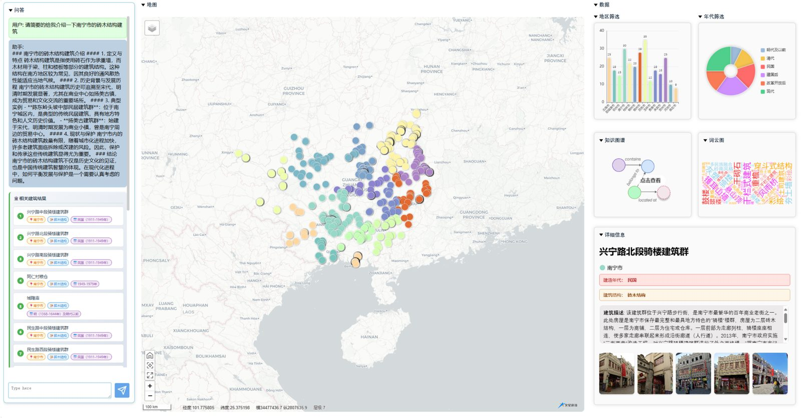

温故知新
壹 2016 广西大学贰 2020 中科院微系统所叁 2024 港科大广州肆 2026 下一站
歴 年表 · 经历 / Timeline
瓦版 號外
第一作者 登 VINCI

HeritageExplorer：广州 831 处历史建筑多模态可视化与对话系统，扩展至广西 2,036 处历史建筑。地图入口、图谱大脑、四通路检索、可追溯回答。
CHI 2025
GenColor
文生图扩散模型提取语境配色——合作论文刊于 CHI 2025。
特許 四件
专利四 软著一
危化品云数据联动 · 消防智能感知 · LoRa 测力 · 客流检测
報 论文 · 专利 · 项目 / Papers, patents & projects
灯
行灯：切换昼夜 / Lantern: toggle night
経典版 門 经典版主页 / Classic site
王钰淞
GIS × 多模态 AI
港科大（广州）MPhil
Yusong Wang
钰
历史建筑 · 速写
己 自己紹介 · 关于我 / About
广西历史建筑图
図 HeritageExplorer 地图卷 / HeritageExplorer
筆 文房四宝 · 技能 / Toolbox
作品集
画 AI 作品集 / AI portfolio
履歴書
印
王钰淞 · Yusong Wang
履 履歴書 · 简历 / CV
緘
ywang677 @ hkust-gz
文 书信 · 联系 / Contact
彩 扇子：切换画风 / Fan: switch print style
✦ 点击书案上带红印的物件 · 扇子换画风 · 行灯开夜景 ✦ Click the red-sealed objects · fan = style · lantern = night
錦
这个页面需要 JavaScript。打开经典版主页 / This page needs JavaScript — open the classic site .
自己紹介 · 王钰淞 About · Yusong Wang 香港科技大学（广州）计算媒体与艺术 MPhil，前中科院上海微系统所嵌入式工程师。关注 GIS 可视化、知识图谱、多模态检索与文化遗产计算。 MPhil student in Computational Media & Arts at HKUST(GZ), formerly an embedded engineer at CAS SIMIT. I work across GIS visualization, knowledge graphs, multimodal retrieval, and computational heritage.
HKUST(GZ) · MPhil VINCI 2025 · 1st author CHI 2025 · co-author 4 patents + 1 SW©
状态：寻找全职机会 · 多模态 Agent 落地 · 遗产叙事 · 可解释 RAG Status: open to full-time roles · multimodal agents · heritage storytelling · explainable RAG
广西历史建筑多模态 GIS 平台。 A multimodal GIS platform for Guangxi heritage. 前端 Vue 3 + Mars2D，后端 FastAPI + Neo4j，一键 Docker Compose —— 可看、可搜、可对话。
Vue 3 + Mars2D front end, FastAPI + Neo4j back end, one Docker Compose — visible, searchable, conversational.
2,036 历史建筑 buildings
9,636 建筑构件 components
1,294 地图点 map points
4 检索通路 retrieval lanes
地图入口 · 图谱大脑 Map entry · graph brain Neo4j 存储建筑、构件、城市与年代关系。 Neo4j relations across buildings, components, cities, and eras.
Vue 3 Mars2D FastAPI Neo4j Docker
4 通路 RAG · 可追溯回答 4-lane RAG · grounded replies 关键词、BGE 文本、CLIP 图像、CLIP 构件并行检索，DeepSeek-V3 融合答复。 Keyword, BGE text, CLIP image and CLIP component lanes fused by DeepSeek-V3.
BGE CLIP Grounding DINO DeepSeek-V3
HeritageExplorer · First author · VINCI 2025
广州 831 处历史建筑的多模态交互式可视化与对话系统，并扩展至广西历史建筑数据与工程化部署。 Interactive visualization + dialogue for 831 Guangzhou heritage buildings, extended to Guangxi-scale data and production deployment.
DOI · 10.1145/3769534.3769571
GenColor · Co-author · CHI 2025
基于文生图扩散模型的生成式框架，自动提取与语境相关的设计配色方案。 A text-to-image diffusion framework that extracts context-specific color palettes for visual design.
Diffusion Color Design HCI
4 发明专利 patents
1 软件著作权 software copyright
工程项目 Projects 2020–22 危化品云数据联动装置 Hazardous-chemical cloud sensor 上海市科委 19511102801。CH4/CO2/温湿度 + 摄像头多传感器融合。 STCSM #19511102801. CH4/CO2/T&H sensors fused with camera imagery.
2020–22 消防管理智能感知设备 Smart fire-safety sensor 上海市科委 19DZ12020027。场景自适应配置，CSMA/CA 载波侦听。 STCSM #19DZ12020027. Scene-adaptive configuration, CSMA/CA sensing.
2021–22 振弦式钢筋计无线测力 Wireless force sensor 基于 LoRa 的深基坑混凝土支撑轴力无线监测。 LoRa axial-force monitoring for deep-pit struts.
2020–21 虹桥站客流检测 Hongqiao passenger flow 基于蓝牙的实时热力图，用于高峰预警与规划。 Bluetooth heatmaps for peak-hour alerts and planning.
2019 光伏运维平台 PV O&M platform 第五届“互联网+”大赛，光伏故障监测与修复。 5th Internet+ contest, IoT PV fault detection.
2017 智慧农业 Smart agriculture 第三届“互联网+”大赛，果园病虫害检测与反馈平台。 3rd Internet+ contest, orchard pest feedback platform.
2016 广西大学 · 电气工程本科 Guangxi University · B.Eng 电气工程及其自动化。参与两届互联网+大赛（智慧农业、光伏运维）。 Electrical Engineering & Automation. Competed twice in Internet+ (smart agriculture, PV O&M).
2020 中科院上海微系统所 · 嵌入式工程师 CAS SIMIT · Embedded engineer 无线水压表 / LoRa 测力 / 消防感知。原理图、MCU 固件、现场部署全流程，参与标准起草。 Wireless meters / LoRa sensors / fire-safety, schematic to field deployment; co-authored industry standards.
2024 HKUST(GZ) · 计算媒体与艺术 MPhil HKUST(GZ) · CMA MPhil HeritageExplorer 投稿 VINCI 2025；合作 GenColor（CHI 2025）；HeritageExplorer 从 0 到 1 搭建。 HeritageExplorer at VINCI 2025; co-authored GenColor (CHI 2025); built HeritageExplorer from zero.
2026 下一站 What’s next 多模态 Agent 落地 · 遗产叙事 · 可解释 RAG。寻找全职机会。 Multimodal agents in the wild · heritage storytelling · explainable RAG. Open to full-time roles.
AI 叙事影像与生成媒介作品集 —— 图片按原始比例完整展示，点击在新标签页查看大图。 AI narrative & generative media. Images are shown uncropped; click to open full size.
COVER 作品集封面 Portfolio cover PPT·02 METHOD 创作方法地图 Creative method map PPT·03 STORYBOARD Li ShishiPPT·04 NARRATIVE 草船借箭 Straw Boats PPT·05 REWRITE The StarPPT·06 ARTWORK 二向箔 Two-Dimensional Foil PPT·07 INTERACTION 清明上河图 RPG Qingming RPG PPT·08 STYLE 训练与风格转译 Training & style transfer PPT·09 REAL-TIME TouchDesigner
多模态 AI & 大模型 Multimodal AI & LLMs Chinese-CLIP BGE Grounding DINO Qwen-VL DeepSeek-V3 GPT Claude API Prompt Eng. Agent Workflow
GIS & 可视化 GIS & Visualization Mars2D Cesium Leaflet 高德 API Amap API ECharts vis-network Cytoscape
图谱 & 检索 Graph & Retrieval Neo4j · Cypher 向量索引 Vector Index RAG 多通道融合 Multi-lane Fusion
Web & 部署 Web & Deployment Vue 3 + Vite TypeScript FastAPI Docker Compose Nginx
编程 & 嵌入式 Programming & Embedded Python C / C++ TypeScript HTML 汇编 Assembly IAR Workbench
设计 & 建模 Design & Modeling Altium Designer SolidWorks Photoshop TouchDesigner Blender
语言：中文母语 · 英语 CET-6 / IELTS 6.5 Languages: Chinese (native) · English (CET-6, IELTS 6.5)
一起把历史装进下一个模型。 Let’s put history into the next model.
所在地 Based 广西南宁 / 广州 Nanning · Guangzhou
发邮件 → Email me → 下载简历 (.docx) Download CV (.docx)
履歴書 · 简历（Word 文档） 履歴書 · CV (Word document)
下载 CV_Yusong_Wang.docx Download CV_Yusong_Wang.docx
这扇襖通往经典版主页 —— 适合快速浏览、打印或转发给 HR。 This door leads to the classic homepage — quicker to skim, print or forward.
打开经典版 → Open the classic site →